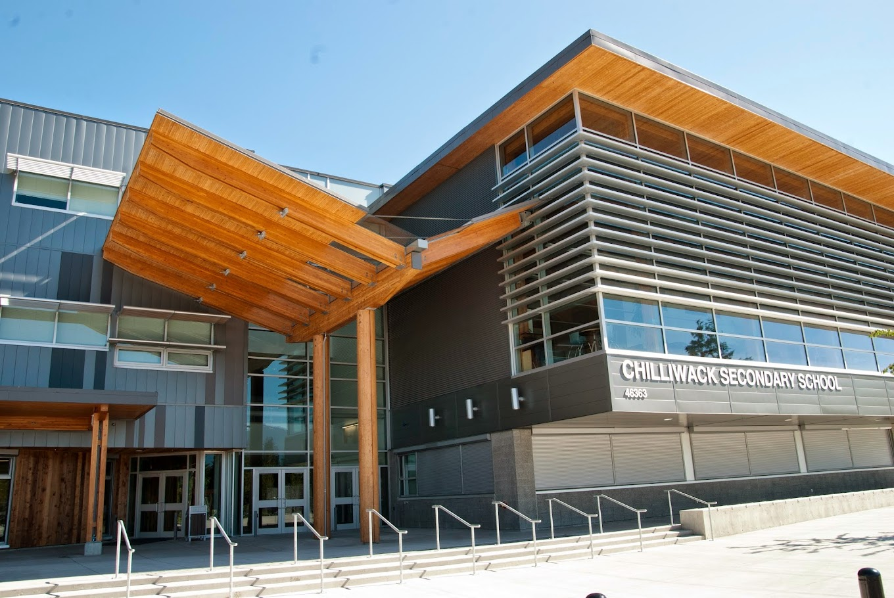
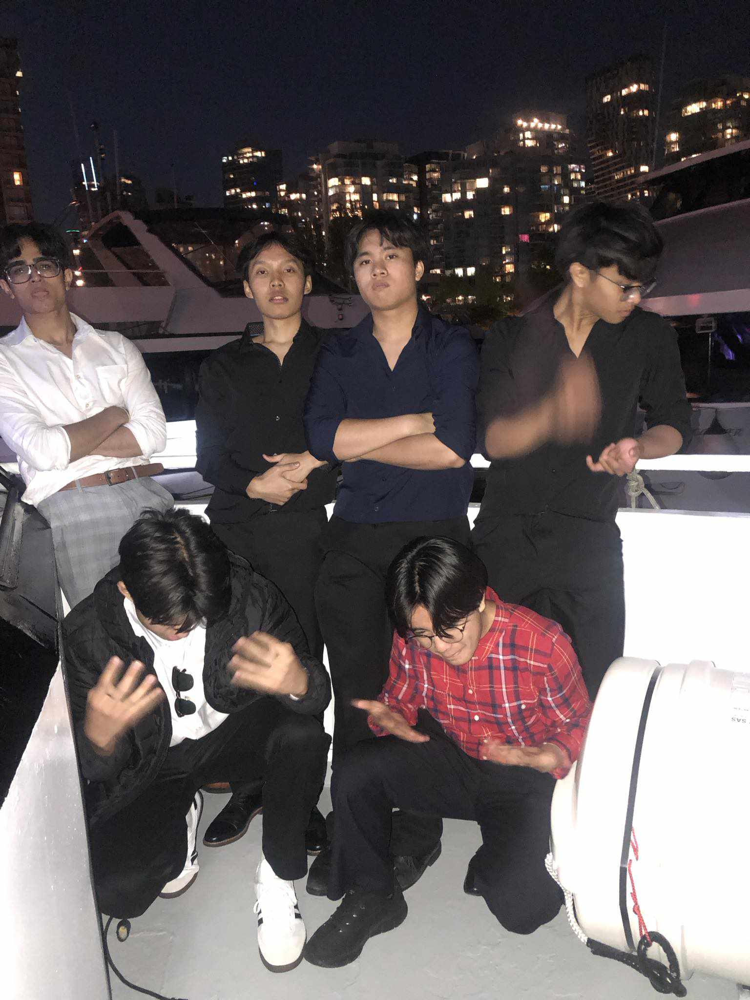
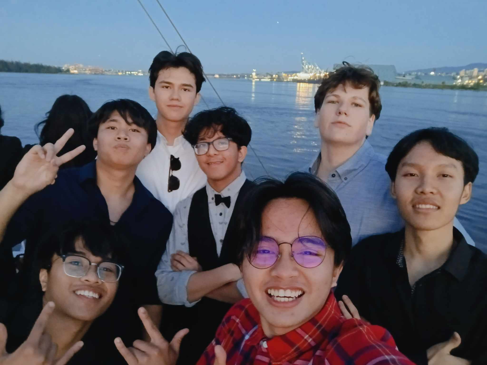

Welcome to the present here we will talk about how Im doing, what I'm doing, and other things that might be describe
Year 2024: The present
January 1, 2024 I enrolled at a school named Chilliwack Secondary School, I enrolled on 4 different subjects or what they call courses which is; Physics 11, Contemporary Indigenou Studies 12, Career Life Education 11, and Calculus 12. At first I thought it would be hard but it was surprisingly preaty easy, the teachers are teaching very well, but I was strugglingto keep up on Calculus 12 since i didn't take Calculus 11 and only took precalculus on my previous school so I was suffering on the class.

I realized that I would fail in class if I keep taking a class that I don't even understand, so I switch it with programming 10. After taking programming I was having alot of fun making games It gave me a sense of success when I accomplished something which was really fun, so I realized that programming was my thing so I started to take it very seriously. When I first entered in the world of programming I first started to learn about functions so I was controlling this dog which I am ordering to do something It was really fun. After I finished that my teacher just gave me another assignment and here I first learned my first programming language wich is JavaScript. Though don't take me wrong I still study very hard and fairly to my other courses, but programming is what I'm aiming for.
After some time, I realized that my programming teacher wasn't really teaching us but he just gave us this assignment to do and just make us complete it, so I started studying other programming stuff online. I leanred HTML, and CSS for now which is what this website is made of.
After days and days of studying and learning, I was starting to gain this pleasure of learning, I stated to think that learning is very fun. After some time the school has this event that every graduate student will go, its call grad cruise. I went to the event and made alot of friends when I was there. My experience on that event was really fun even though that the boat was small but it was enought to fit all students. We ate, we took picture, and partied it was very fun.
As the school year is soon to be over more and more projects and assignment are given. There's this one teacher who want us to teach kid for out final project, I swear he knows my weakness bro. I have bad experiences on teaching so I'm preatty bad at it, but I have no choice I have to do it. As of right now I'm making this website for another project wich is very fun to make, I plant to make more websites soon or even games on the future for practice.
My graduation is now nearing and I have many plans for the future. Check out the my future page for more